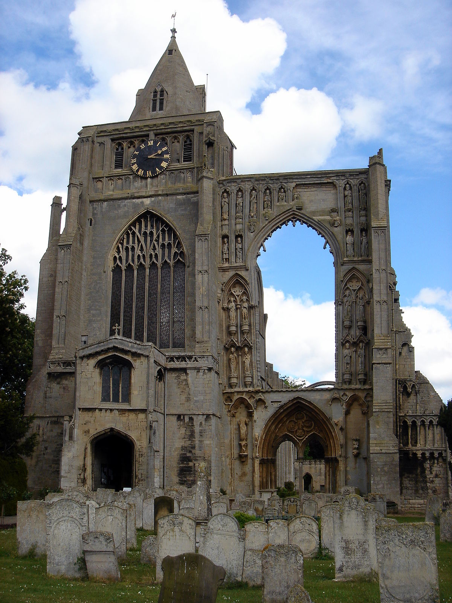

Crowland Abbey
View inside
View inside
View close up
Crowland (modern usage) or Croyland (medieval era name and the one still in ecclesiastical use; cf. Latin: Croilandia) is a small town in the South Holland district of Lincolnshire, England. It is situated between Peterborough and Spalding. Crowland contains two sites of historical interest, Crowland Abbey and Trinity Bridge